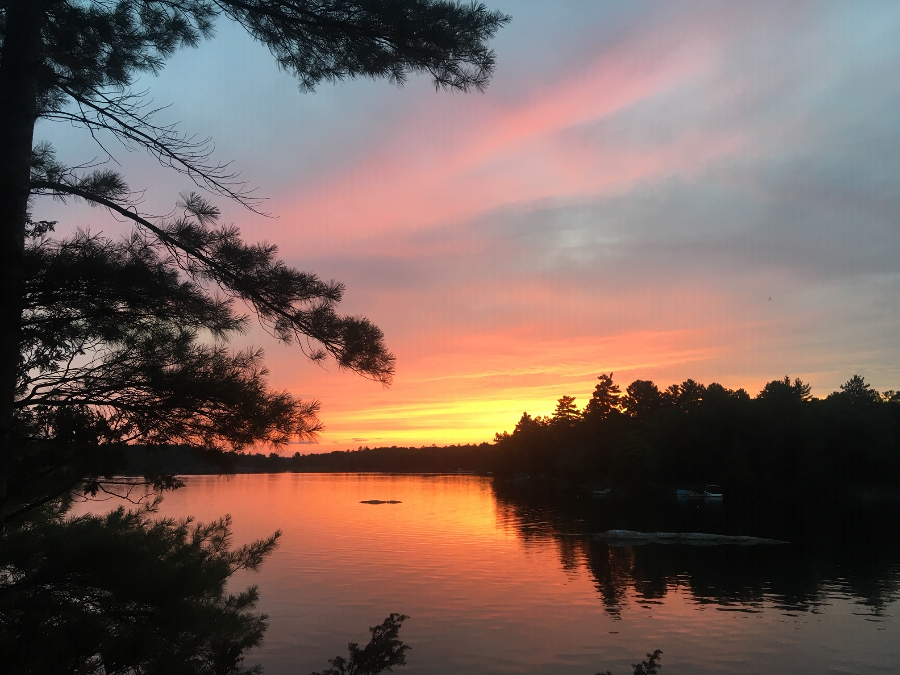
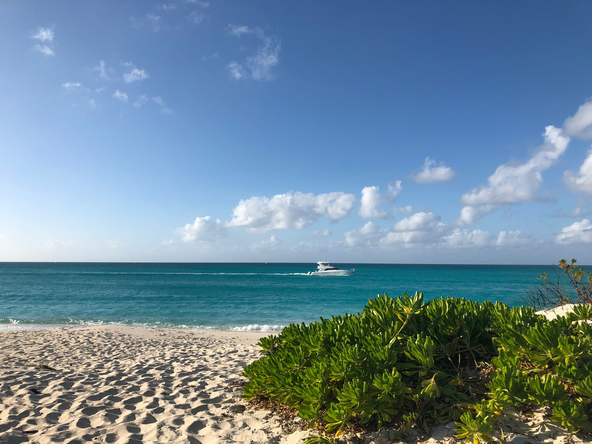

I am lucky to be able to travel often. My family usually takes a few trips per year. Recently, we just got back from the Turks and Caicos Islands in January 2019. I love to visit warm places, especially during the winter, to get a break from the cold weather. Also, I went on the school trip to France and Spain last summer. I had an amazing time with my friends traveling to Europe. I have been to Belgium and the Netherlands, and my mom took me to Iceland in 2017. My favorite place, however, is in Canada. Every summer, I spend two weeks in Canada at a family lake house with my parents, grandparents, cousins, and friends. I love to ski on the lake, drive the speed boat, and spend time with my friends there. Seeing new places is truly amazing.
 
When I was young, we had a golden retriever named Sam. I loved him so much, but I don't really remember him. He died when in 2011. For that entire year, I begged my parents to let me get another dog. Being an only child, I desperately wanted someone to play with at home. Usually I got many presents for Christmas, but that year, I told my dad that the only thing I wanted was a little puppy. I wanted a female Golden Retriever. My parents broke down and got me a puppy, Charlotte, or Chari for short. She is so beautiful, playful, loyal, and fun. Charlotte is always happy to see me when I walk in the door, and she keeps me company when I am sad. I am so happy to have a dog like Chari.
I started playing soccer when I was 6. I played at the YMCA in Greenville. Ever since I remember, I have always been an athletic kid. I am so happy that I play soccer. Both of my parents played, so I was pushed to play also. I love the game. When I am out on the field making a good play, everything else dissapears and I just think about the game. It is calming, good excercise, and very fun. Also, I have met some of my best friends through soccer. I play club soccer at CESA and school soccer for St. Joseph's. Soccer is truly a beautiful game, and I enjoy it very much.
Ever since 6th grade, I have gone to St. Joes. It is a very good school. St. Joes is a catholic school known for its rigoruous academics. I have many friends here, and despite the hard work, I like the school. I have played on the soccer team since 7th grade. The school events like games, dances, and spirit week are fun. I even went on a trip to Europe with the school. I am thankful for St. Joseph's because of my friends, my education, my teachers, and the memories here.